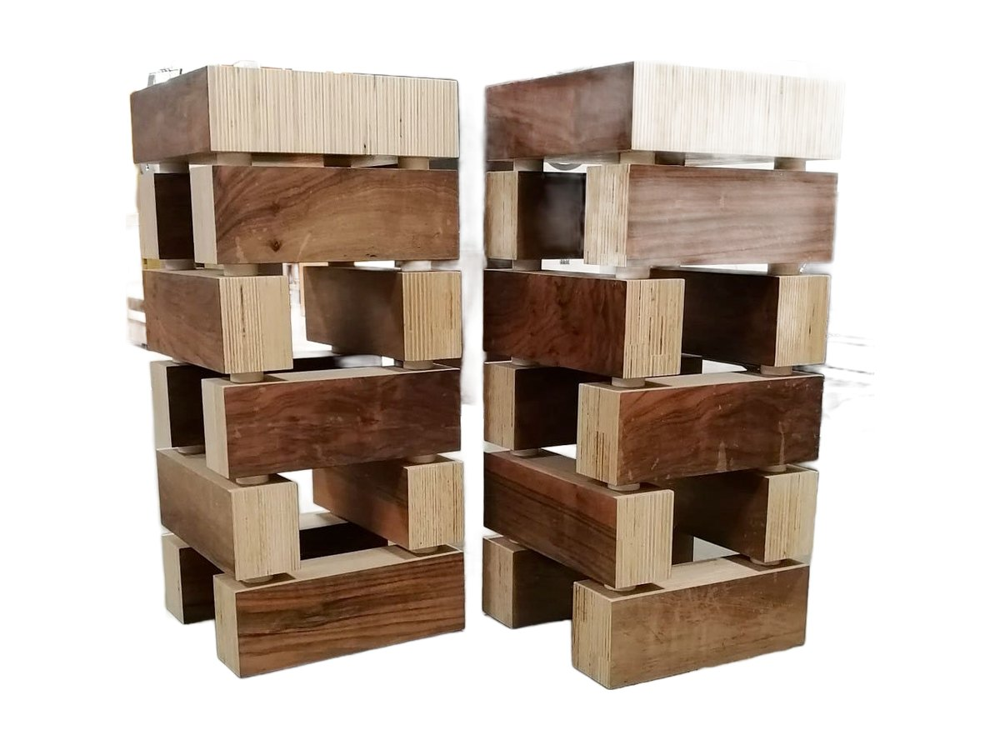
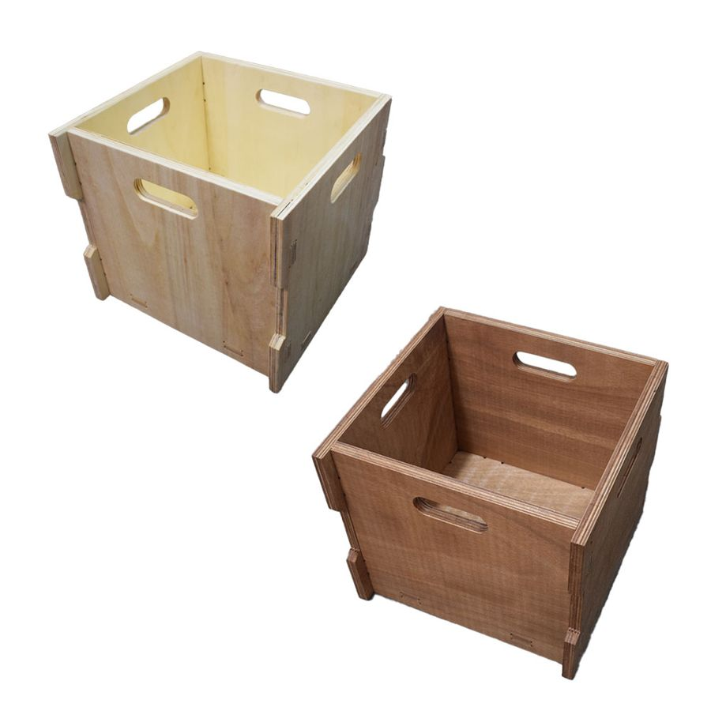
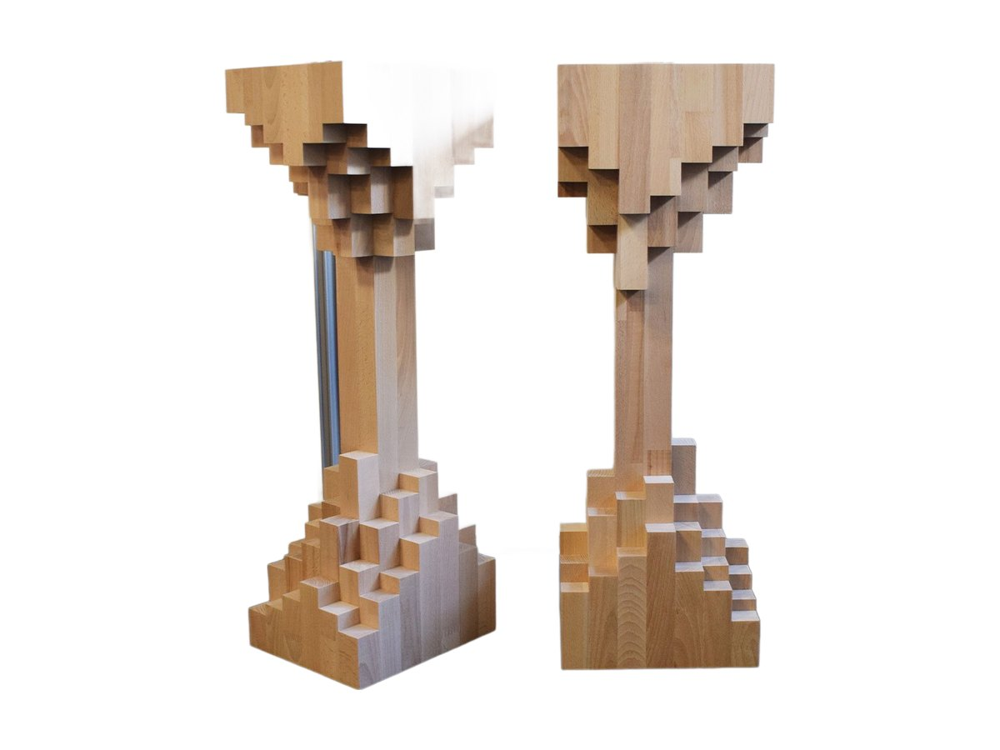
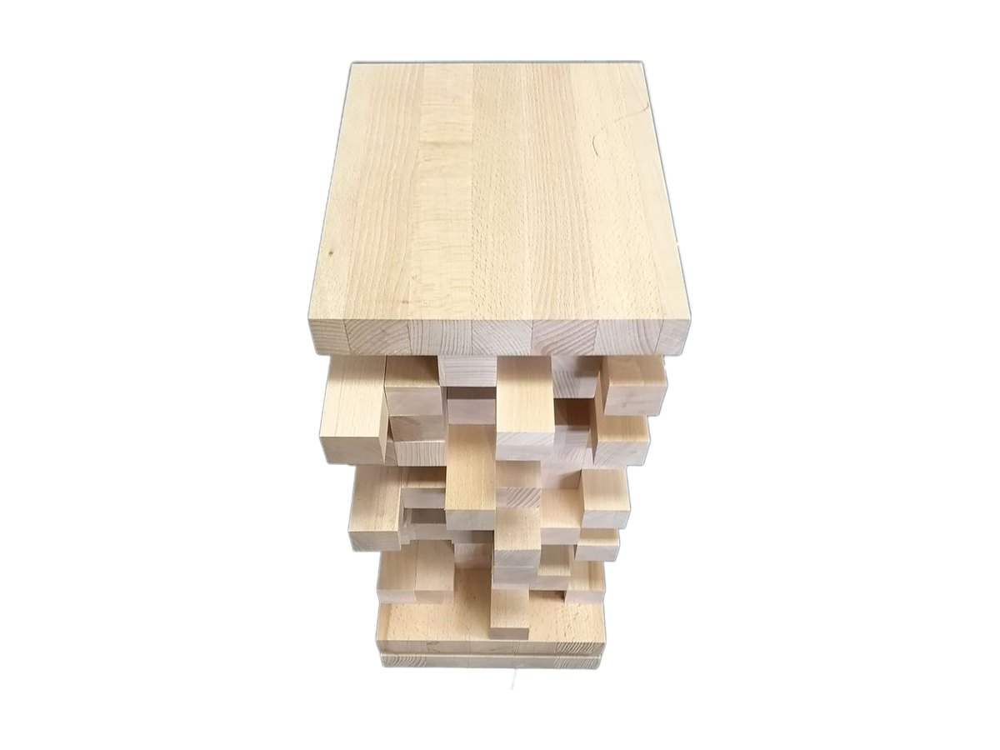

Il legno giusto sotto ogni nota.
Mobili costruiti a mano per casse, giradischi, amplificatori, streamer e vinili.
Pezzi unici, pensati per l'ascolto.
Ogni pezzo nasce nel mio laboratorio, dal legno massello alla finitura. Le misure si adattano ai tuoi apparecchi, non il contrario.

Mobile hi-fi Extrasound Vinyl
In cima il giradischi, al centro l'amplificatore, sotto fino a 90 vinili. In legno massello di Faggio o di Noce Canaletto.
Scopri il Vinyl
Stand per diffusori Wood Brick
Blocchi di multistrato di Pioppo e Noce Nazionale, separati da rondelle che fermano le vibrazioni. Lasciati al naturale.
Scopri il Wood Brick
Pannelli acustici Extrasound Wave
Tre pannelli in listarelle di essenze diverse, con un'onda sonora in rilievo. Diffondono il suono e arredano la stanza d'ascolto.
Scopri il Wave
Extrasound Cube
Il contenitore modulare in legno per i tuoi vinili. Lo usi da solo o lo componi con altri moduli, in Pioppo o in Doussiè.
Scopri il Cube
Stand per diffusori Extrasound Tree
In Faggio massello, a forma di albero: base a gradoni, fusto sottile e piano che si apre a scalini.
Scopri il Tree
Stand per diffusori Stile Pannello
In Faggio massello, con listelli sporgenti come un pannello acustico: correggono il suono su due lati.
Scopri lo Stile PannelloDal tuo impianto al mobile finito.
Il lavoro parte da una conversazione sugli apparecchi che hai e su dove li vuoi mettere.
Ascolto e misure
Mi racconti l'impianto e lo spazio. Insieme definiamo dimensioni, piani e passaggio dei cavi.
Scelta del legno
Propongo essenze e finiture adatte all'ambiente e al peso dei tuoi componenti.
Costruzione a mano
Taglio, incastro e finitura nel mio laboratorio. Ti aggiorno con le foto durante il lavoro.
Hai un impianto da sistemare?
Scrivimi con le misure dei tuoi apparecchi e ti rispondo con una proposta.
info@fabrizioberlati.com